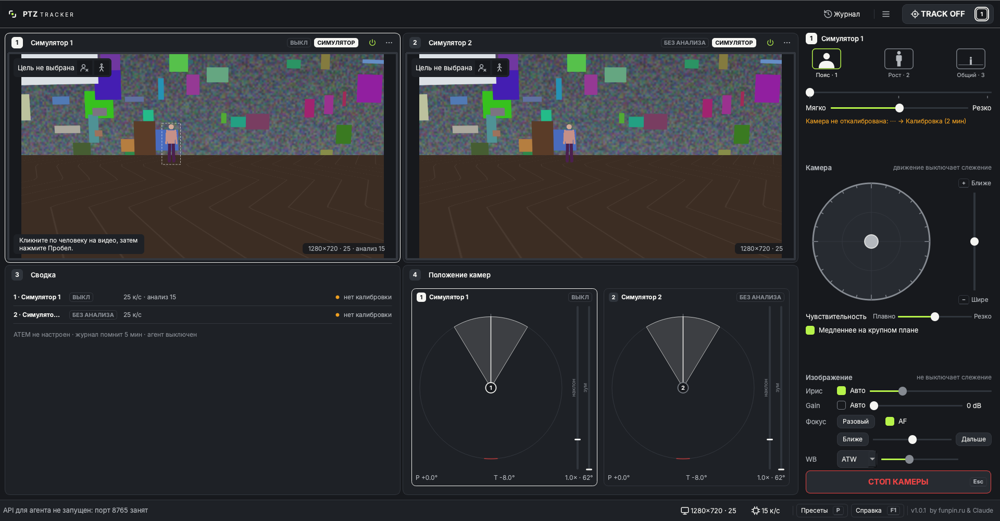
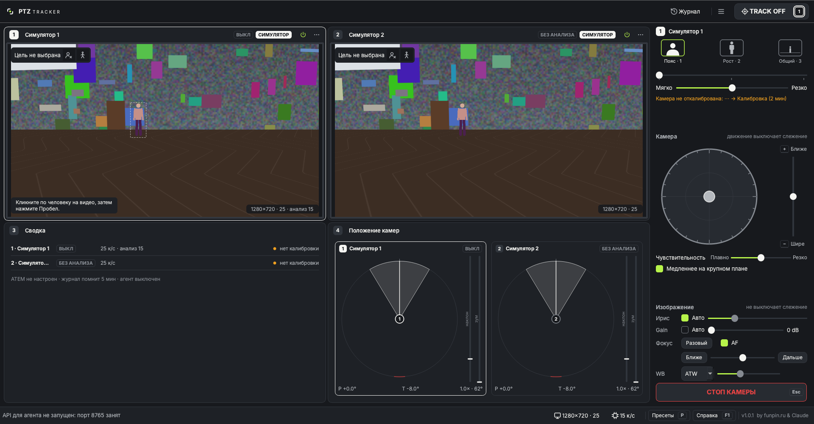
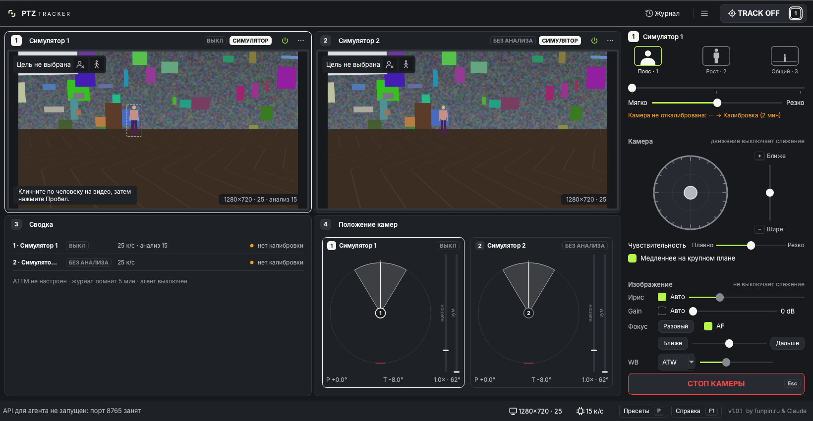
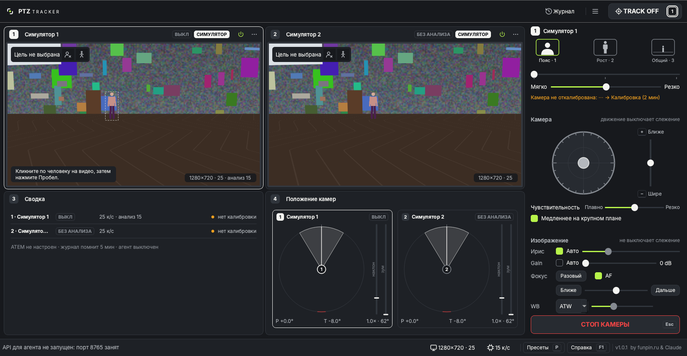
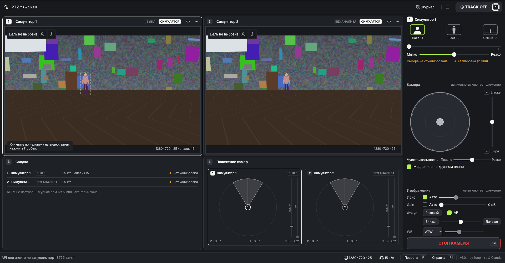

Картинку камеры ограничивает ширина клетки, а не высота. Поэтому верхний ряд выгодно делать ровно такой высоты, чтобы кадр 16:9 встал от края до края без чёрных полос. Всё, что остаётся, получает нижний ряд (Сводка, Положение камер).
Видео становится больше примерно на 7% по ширине. Чёрные полосы по бокам исчезают, а «Положение камер» остаётся читаемым. Так только когда внизу нет камер. Если в клетках 3–4 стоят камеры, все четыре клетки снова одинаковые.




